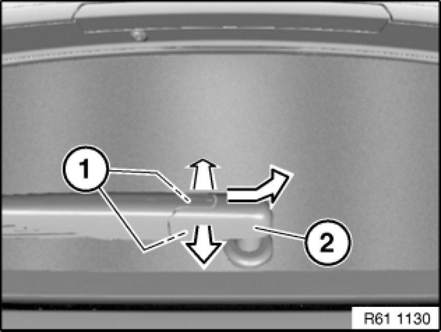
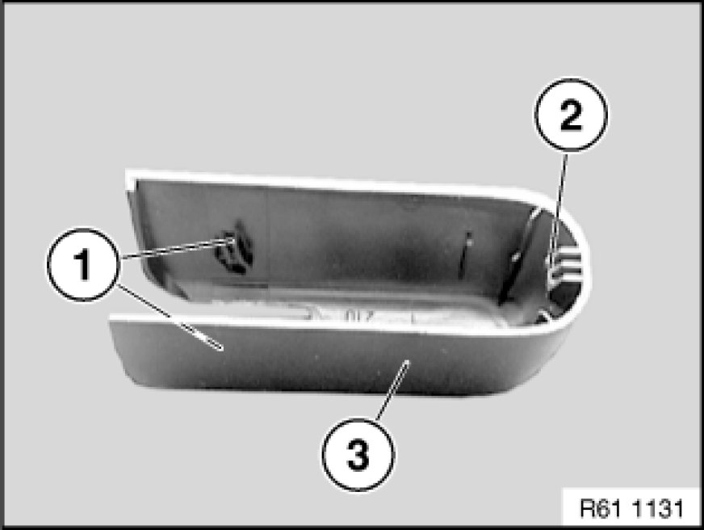
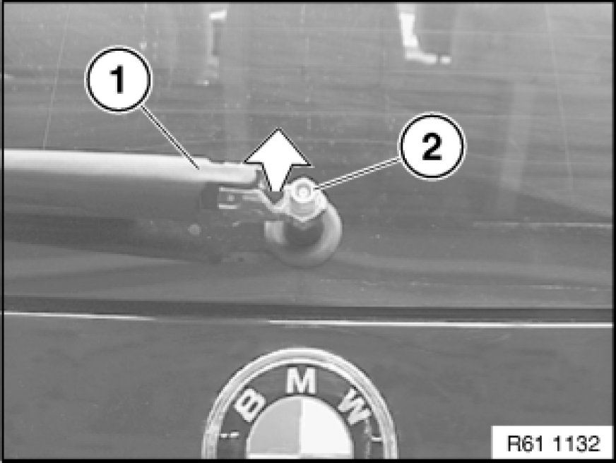
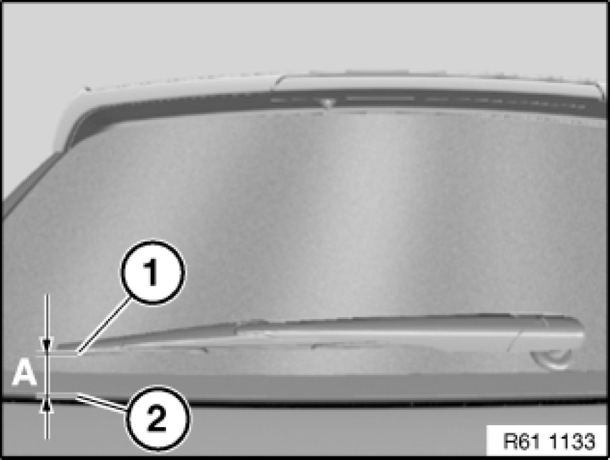

Replacing Wiper Arm for Rear Window Wiper
61 62 030 - Replacing wiper arm for rear window wiper

Pull internal locks (2) in direction of arrow and remove cover cap (1) as illustrated.

Installation:
Locks (1) and (2) of cover cap (3) must not be damaged.

Set wiper arm (1) upwards.
Release nut (2) and remove wiper arm (1) in direction of arrow.
Installation Note:
Tightening torque 61 62 5AZ 61 62 Tailgate Window Wiper.

Installation Note:
Rear window wiper motor must be in wiper rest position.
Adjust measurement (A) between wiper blade (1) and rear window edge (2).
Measurement (A): 29 mm.